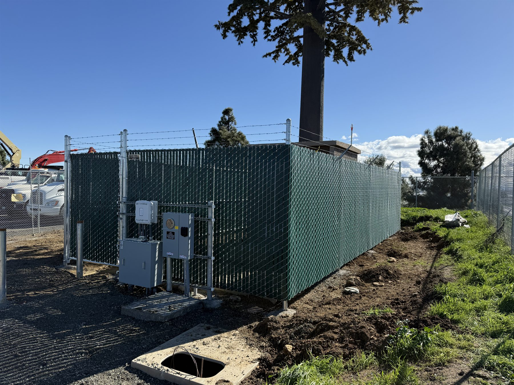

Commercial Chain Link Perimeters
Heavy-duty chain link layouts for yards, industrial edges, utility runs, and properties that need dependable perimeter control.
- Industrial security fencing
- Commercial perimeter layouts
- Durability for everyday use
South San Francisco Fence Company
Pro Fence Company serves South San Francisco from Hayward with a strong fit for the kinds of scopes that show up often there: chain link security fencing, utility enclosures, access gates, practical repairs, and commercial perimeter work built for daily use instead of showpiece marketing copy.
South SF Projects
Good Fit Projects
Heavy-duty chain link layouts for yards, industrial edges, utility runs, and properties that need dependable perimeter control.

Enclosures for equipment, service zones, and infrastructure areas that need stronger separation and cleaner organization.

Gate systems for properties that need more controlled access, cleaner circulation, and stronger entry hardware.
Why Clients Call Us
Commercial and industrial buyers in South San Francisco often need a contractor with real chain link and access-control experience, not just general fence work.
Because Pro Fence is based in Hayward and serves properties within 50 miles, South San Francisco clients can still get responsive service for hard-working security-minded projects.
Common South SF Needs
South San Francisco FAQs
Yes. South San Francisco is inside the 50-mile service radius, and we serve projects there from Hayward.
Yes. Chain link, site security, utility enclosures, and access-control work are all a strong fit for South San Francisco projects.
Yes. Gates, screened enclosures, and practical access work are part of the same offering because they often belong in the same scope.
South San Francisco Fence Estimate